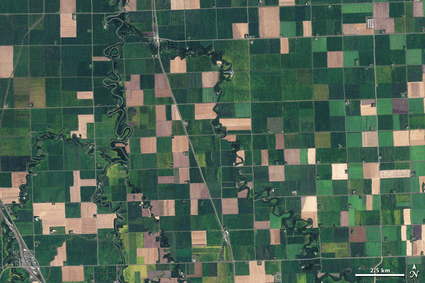

Farming Nitrogen Cycle / Statistics
Farming Nitrogen Cycle / Statistics
Peer to Peer Farming with Dsensor Dmap ID = . . . .
Farm 1
get data
Farm 2
get data
chart
Build Field Nitrogen Analysis
data table
Produce data table summary
Satellite Images

White Paper